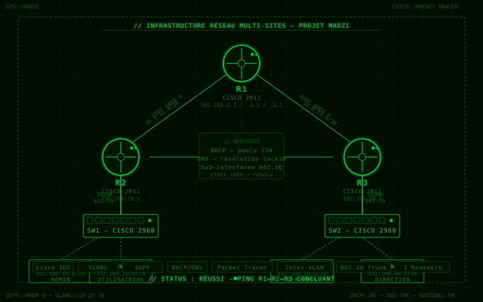
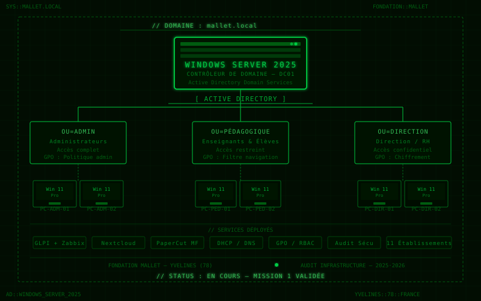
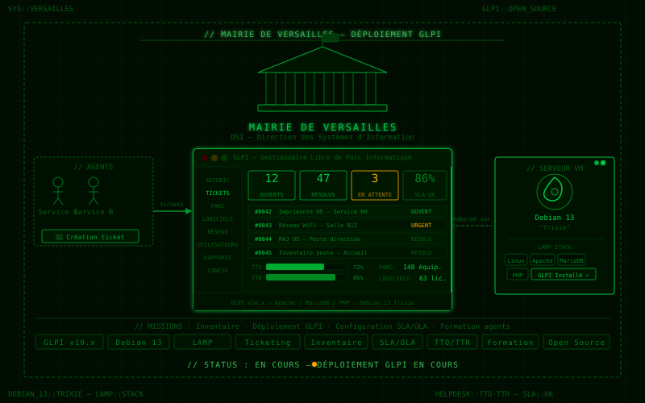

// 03 — TRAVAUX
PROJETS
Réalisations scolaires et personnelles. Cliquez sur un projet pour accéder à la documentation complète.
01

RÉSEAU
✓ RÉUSSI
Projet Madzi
Infrastructure réseau complète : configuration des VLANs, routage inter-VLAN, protocole OSPF et services DHCP/DNS sur équipements Cisco.
02

SYSTÈMES & RÉSEAUX
⟳ EN COURS
Projet Mallet
Audit et déploiement d'une infrastructure Windows Server 2025 avec Active Directory, GPO et 3 OUs pour la Fondation Mallet (11 établissements, Yvelines).
03

ADMINISTRATION · HELPDESK
⟳ EN COURS
Projet Mairie de Versailles
Déploiement de GLPI sur Debian 13 pour la DSI de la Mairie de Versailles : gestion du parc informatique, ticketing et suivi SLA/TTO/TTR.
04
[ IMAGE PROJET ]
[ CATÉGORIE ]
⟳ EN COURS
[ Nom du projet 4 ]
Courte description — contexte, objectif principal, résultat obtenu.